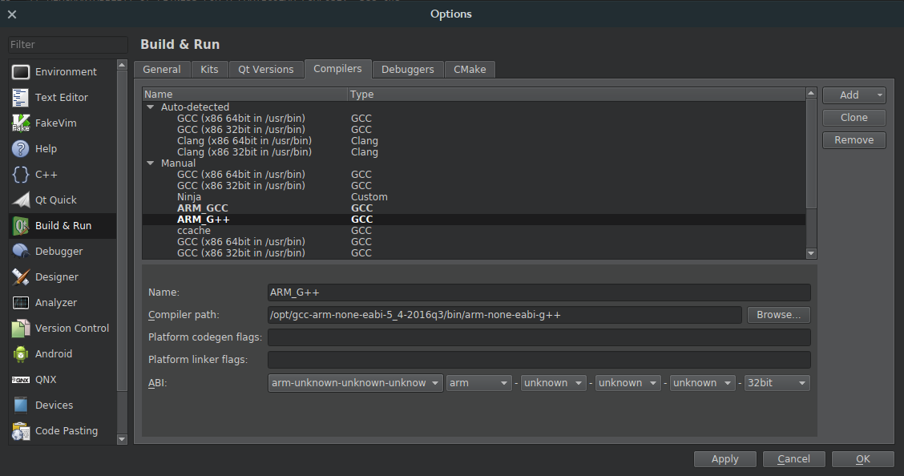
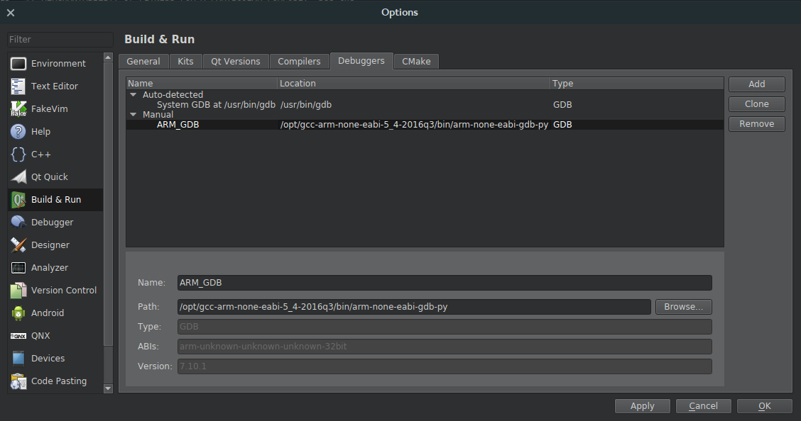
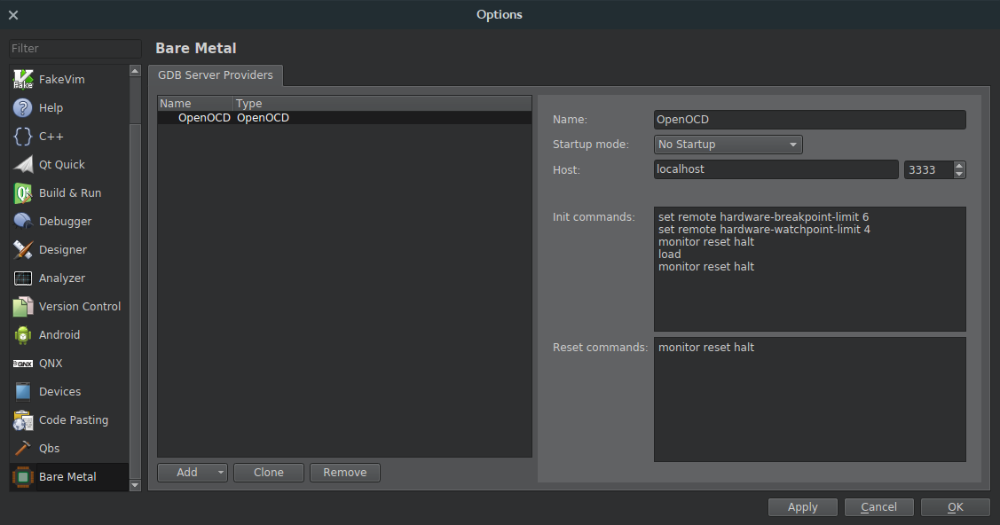
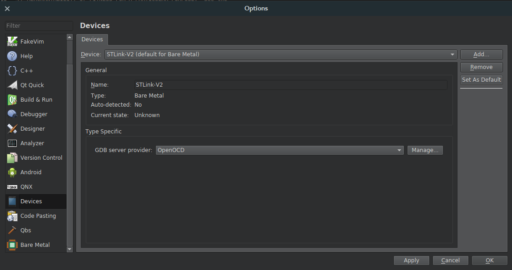
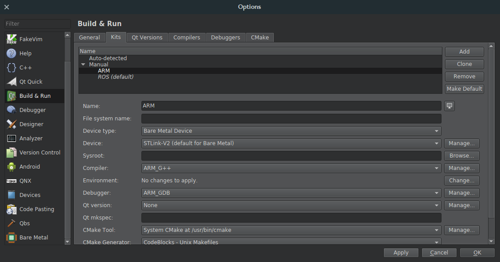
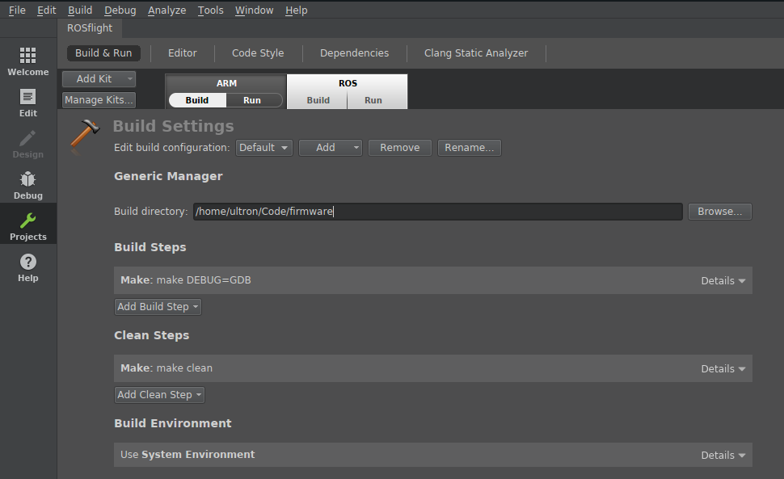
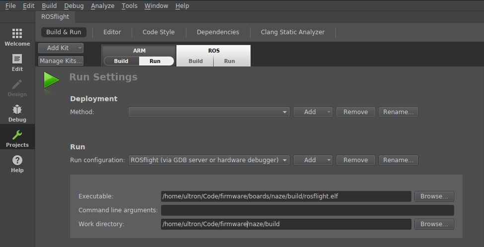

Using an In-Circuit Debugger¶
Debugging an STM32-based board is accomplished with an ST-LINK/V2 in-circuit debugger and programmer. We have had the best luck with the official version from STMicroelectronics. These devices are reasonably priced, and are available directly from STMicroelectronics or from vendors such as Digi-Key, Mouser, and Newark.
Note
There are also cheaper clones of the ST-LINK/V2 available. We have had fairly good luck with these, but have also run into some issues. These are a decent alternative, but we recommend the official version if you can afford it.
The following guide will show you how to get the in-circuit debugger running with either the Visual Studio Code or QtCreator IDE. Start with the steps in the General Setup section, then move on to either the VS Code or QtCreator sections depending on your choice of IDE.
This guide assumes you are running Ubuntu 18.04, which is the currently supported development environment.
General Setup¶
Follow the guide in Building and Flashing to install the compiler toolchain.
Also make sure you have configured your computer as described in the Serial Port Configuration section of the user guide.
Connect debugger to flight controller¶
The ST-LINK/V2 connects to the microcontroller using the Serial Wire Debug (SWD) interface. You will need to connect the GND, NRST, SWDIO, and SWCLK lines of the ST-LINK/V2 to your flight controller. On many F4 boards, these lines are pinned out through a 4-position JST SH connector, although that connector is not always populated. Refer to the documentation for your specific board for details.
The official ST-LINK/V2 also needs a target voltage reference on pin 1 or 2, which for the F4 boards is 3.3V. However, there is no externally accessible 3.3V pinout on the F4 boards. An easy solution to this is to connect pin 19 (VDD 3.3V) of the ST-LINK/V2 to pin 1 or 2 of the ST-LINK/V2 (Target VCC) to provide the voltage reference. You will also need to power the board from another source, either through the USB port or over the servo rail. Note that this connection is not required for the cheap clone versions of the ST-LINK/V2.
VS Code¶
You can install Visual Studio Code by downloading the latest version from their website. Follow the steps below to configure debugging with the in-circuit debugger.
You should open the root firmware directory for editing and debugging, e.g. code /path/to/firmware.
Install OpenOCD¶
OpenOCD (On-Chip Debugger) is the software that will control the debugger. Install from the apt repositories:
sudo apt install openocd
Install Cortex-Debug extension¶
The embedded debugging functionality is provided by the Cortex-Debug extension. Install using the VS Code GUI, or from VS Code press Ctrl+P then type ext install marus25.cortex-debug.
Steps for configuring this extension are described next.
Download SVD file¶
A System View Description (SVD) file describes the configuration (CPU, peripherals, registers, etc.) of the microcontroller. The Cortex-Debug extension can make use of an SVD file to provide more detailed debugging information, such as the ability to inspect register values.
SVD files can be downloaded from STMicroelectronics. The files for the F4 are contained in the ZIP file that can be downloaded here, and the relevant file is STM32F405.svd. The files for the F1 are contained in the ZIP file that can be downloaded here, and the relevant file is STM32F103.svd. Put those files in a convenient location.
Configure build step¶
You can configure VS Code to run make for you when you press Ctrl+Shift+B. To do this, put the following in .vscode/tasks.json inside your firmware working directory:
{
// See https://go.microsoft.com/fwlink/?LinkId=733558
// for the documentation about the tasks.json format
"version": "2.0.0",
"tasks": [
{
"type": "shell",
"label": "make",
"command": "make",
"args": ["DEBUG=GDB"],
"group": {
"kind": "build",
"isDefault": true
}
}
]
}
Note that by default, this will only build the F4 (Revo) firmware. To build the F1 firmware, you will need to edit this to add the argument BOARD=NAZE.
Configure debugging¶
To configure in-circuit debugging of F4 and F1 targets, put something like the following in .vscode/launch.json inside your firmware working repository:
{
// Use IntelliSense to learn about possible attributes.
// Hover to view descriptions of existing attributes.
// For more information, visit: https://go.microsoft.com/fwlink/?linkid=830387
"version": "0.2.0",
"configurations": [
{
"name": "STM32F405",
"type": "cortex-debug",
"request": "launch",
"servertype": "openocd",
"cwd": "${workspaceRoot}",
"executable": "${workspaceRoot}/boards/airbourne/build/rosflight_REVO_Debug.elf",
"device": "STM32F405",
"svdFile": "/path/to/STM32F405.svd",
"configFiles": [
"interface/stlink-v2.cfg",
"target/stm32f4x.cfg"
],
"runToMain": true
},
{
"name": "STM32F103",
"type": "cortex-debug",
"request": "launch",
"servertype": "openocd",
"cwd": "${workspaceRoot}",
"executable": "${workspaceRoot}/boards/breezy/build/rosflight_NAZE_Debug.elf",
"device": "STM32F103",
"svdFile": "/path/to/STM32F103.svd",
"configFiles": [
"interface/stlink-v2.cfg",
"target/stm32f1x.cfg"
],
"runToMain": true
}
]
}
Be sure to edit the values of "svdFile" to point to the respective SVD files you downloaded earlier.
To start debugging, enter the debug pane in VS Code, select the desired configuration, then click the green arrow to start debugging. The shortcut key F5 will also launch the last-selected debug configuration.
More details on the configuration and use of the Cortex-Debug extension can be found here and here.
QtCreator¶
Install QtCreator with apt:
sudo apt install qtcreator
then follow the steps below to set up ARM debugging.
Install OpenOCD¶
OpenOCD (On-Chip Debugger) is the software that will control the debugger. We are going to install the version that is configured to work as a plugin for the Eclipse IDE. To get this version, go to the releases page of the OpenOCD github page and download the latest .tgz file. You can use the following commands, substituting the version you downloaded for <version>:
cd ~/Downloads
tar -xvf gnuarmeclipse-openocd-<version>-dev.tgz
sudo mv openocd /opt/
Then, for convenience, I normally create a script to run openocd for me. Here is my start_openocd_f1 script:
#!/bin/bash
cd /opt/openocd/0.10.0-201701241841/bin # Use the correct version
./openocd -f interface/stlink-v2.cfg -f target/stm32f1x.cfg
Here is my start_openocd_f4 script:
#!/bin/bash
cd /opt/openocd/0.10.0-5-20171110-1117/bin
./openocd -f interface/stlink-v2.cfg -f target/stm32f4x.cfg
Note
On more recent versions of openocd, interface/stlink-v2.cfg is deprecated. Use interface/stlink.cfg instead.
I move these to the /usr/local/bin directory so I can call it from anywhere:
chmod +x start_openocd_f1
chmod +x start_openocd_f4
mv start_openocd_f1 /usr/local/bin
mv start_openocd_f4 /usr/local/bin
Install 32-bit Dependencies¶
QtCreator needs 32-bit python bindings to run GDB. Install these with
sudo dpkg --add-architecture i386
sudo apt update
sudo apt install libpython2.7:i386
Configure QtCreator for ARM Development¶
Open QtCreator and perform the following steps:
Turn on the "Bare Metal Plugin"¶
Help -> About Plugins -> Enable "Bare Metal"
Restart QtCreator
Now, we are going to configure a new "Kit" for ARM development. (This allows you to quickly switch back and forth between ARM and normal development.)
Tell QtCreator where to find the compiler (GCC)¶
- Tools -> Options -> Build & Run -> Compilers -> Add -> GCC -> C++.
- Name the new compiler, e.g. "G++ ARM"
- Point the compiler path to where you just installed your fresh GCC
- The path for G++
/opt/gcc-arm-none-eabi-5_4-2016q3/bin/arm-none-eabi-g++
Do the same for GCC (if you are going to be doing any C-only code)
- Tools -> Options -> Build & Run -> Compilers -> Add -> GCC -> C.
- Name the compiler, e.g. "GCC ARM"
- Point the compiler path to where you just installed your fresh GCC
- The path for GCC is
/opt/gcc-arm-none-eabi-5_4-2016q3/bin/arm-none-eabi-gcc

Add the Debugger (GDB)¶
- Tools -> Options -> Build & Run -> Debuggers -> Add -> GDB.
- Name it something
- Point it to the new debugger you just installed
- The Path for
/opt/gcc-arm-none-eabi-5_4-2016q3/bin/arm-none-eabi-gdb-py

Configure the STLink-V2 with OpenOCD¶
Go to the Bare Metal Plugin
- Tools -> Options -> Devices -> Bare Metal -> Add -> OpenOCD
- Leave all options at default values and click Apply 
- Tools -> Options -> Devices -> Devices -> Add -> Bare Metal Device -> Start Wizard
- Name: ST-Link V2
- GDB Server Provider: OpenOCD

Build the new Development Kit¶
- Tools -> Options -> Build & Run -> Kits -> Add
- Name: ARM
- Device Type: Bare Metal Device
- Device: ST-Link V2
- Compiler: GCC ARM/G++ ARM
- Debugger: ARM GDB
- Qt Version: None

Test the Debugger¶
Here are the instructions for an F1 target. The instructions are very similar for an F4, just choose the correct .elf file.
Turn on the Debugger¶
Connect the debugger to your flight controller. Here is the pinout for the Flip32 and Flip32+:

Plug in the debugger and start openocd (you will need sudo privileges):
sudo start_openocd_f1
Build the Correct Example Code¶
- Import Existing Project
- Open the root of the firmware
- Do not add .creator files to the Git repository
Configure the Build Environment¶
- Go to the "Projects" tab on the left hand side
- Switch to the ARM Kit we just created
- Build Settings:
- Change "Build Directory" to the firmware root
- Build Steps:
make BOARD=NAZE DEBUG=GDB
- Run Settings:
- Change "Run Configuration" to hardware debugger
- Choose the
.elffile in theboards/breezy/builddirectory (you'll need to build first)firmware/boards/breezy/build/rosflight.elf
You're done! Just select the "Debug" tab and debug your project!